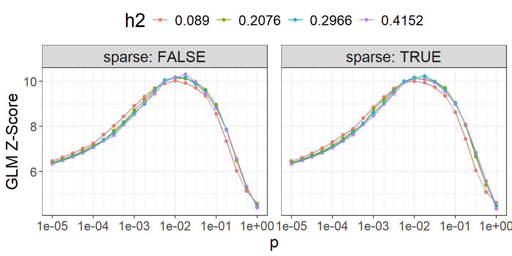
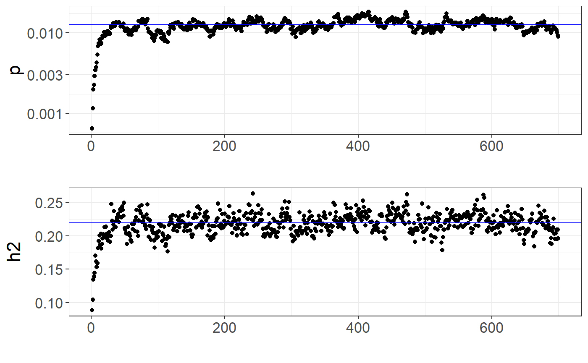
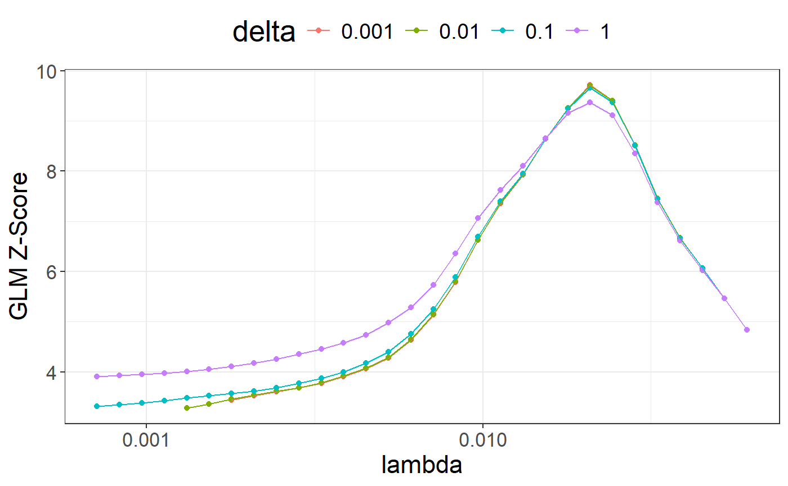

Polygenic scores and inference using LDpred2
Florian Privé
June 8, 2023
Source:vignettes/LDpred2.Rmd
LDpred2.RmdHere I show how to compute polygenic scores using LDpred2, as well as inferring genetic architecture parameters with LDpred2-auto.
If you have to write a standalone LDpred2 command line script, have a look at this example written by two LDpred2 users.
Please be careful about the spelling; you should write LDpred2, not LDPred2!
Here is a (slightly outdated) video of me going through the tutorial and explaining the different steps:
Installation
In R, run
# install.packages("remotes")
remotes::install_github("privefl/bigsnpr")or for the CRAN version
install.packages("bigsnpr")If you install {bigsnpr} >= v1.10.4, LDpred2-grid and LDpred2-auto should be much faster for large data.
if you install {bigsnpr} >= v1.11.4, there is a new version LDpred2-auto that was validated for inferring parameters of genetic architectures (cf. at the end of this tutorial).
Which set of variants to use?
To run LDpred2, you need
- GWAS summary statistics with marginal effect sizes, their standard errors, and the corresponding sample size(s),
- an LD (correlation) matrix computed from individuals of the same genetic ancestry as individuals used in the GWAS,
- individual-level data for tuning hyper-parameters (when using LDpred2-grid or lassosum2) and for testing the final models.
You need to restrict to genetic variants in common between all these datasets.
We previously recommended to use a set of 1,054,330 HapMap3 variants for LDpred2, because they provide a good coverage of the genome and are generally well imputed and available in most studies. In this paper, we recently proposed an extension of this set, to provide an even better coverage of the genome by adding 37% more variants, and called it HapMap3+. This is the preferred set of variants to use with LDpred2 when power is sufficient.
You should use these sets of variants only when your data is imputed so that the overlap is good. If you only have access to a chip of genotyped variants, you should use these. In that case, you should compute the LD information yourself (as done for the tutorial data below).
If you use HM3/HM3+ variants with European summary statistics and do not have enough data to use as LD reference (e.g. at least 2000 individuals), we provide LD matrices to be used directly:
- for HapMap3+ variants with independent LD blocks (from this paper)
- for HapMap3 variants with independent LD blocks (previously recommended in this paper)
- along with an example R script on how to use them
Note that forming independent LD blocks in LD matrices can be useful for robustness and extra speed gains (see this paper).
Information about the HapMap3+ variants can be retrieved with
# $pos is in build GRCh37 / hg19, but we provide positions in 2 other builds
info <- readRDS(runonce::download_file(
"https://figshare.com/ndownloader/files/37802721",
dir = "tmp-data", fname = "map_hm3_plus.rds"))
str(info)## Classes 'tbl_df', 'tbl' and 'data.frame': 1444196 obs. of 10 variables:
## $ chr : int 1 1 1 1 1 1 1 1 1 1 ...
## $ pos : int 68082 77866 87409 87647 88144 89654 565935 568631 720797 741397 ...
## $ a0 : chr "T" "C" "C" "T" ...
## $ a1 : chr "C" "T" "T" "C" ...
## $ rsid : chr "rs367789441" "rs563593912" "rs139490478" "rs146836579" ...
## $ af_UKBB : num 0.0708 0.07691 0.07683 0.01353 0.00857 ...
## $ ld : num 1.81 1.3 1.57 1.34 1.16 ...
## $ block_id: int 1 1 1 1 1 1 1 1 1 1 ...
## $ pos_hg18: int 57945 67729 77272 77510 78007 79517 555798 558494 710660 731260 ...
## $ pos_hg38: int 68082 77866 87409 87647 88144 89654 630555 633251 785417 806017 ...Information about the HapMap3 variants can be retrieved with
# $pos is in build GRCh37 / hg19, but we provide positions in 3 other builds
info <- readRDS(runonce::download_file(
"https://figshare.com/ndownloader/files/36360900",
dir = "tmp-data", fname = "map_hm3.rds"))
str(info)## Classes 'tbl_df', 'tbl' and 'data.frame': 1054330 obs. of 11 variables:
## $ chr : int 1 1 1 1 1 1 1 1 1 1 ...
## $ pos : int 752721 754182 760912 768448 779322 838555 846808 853954 854250 864938 ...
## $ a0 : chr "A" "A" "C" "G" ...
## $ a1 : chr "G" "G" "T" "A" ...
## $ rsid : chr "rs3131972" "rs3131969" "rs1048488" "rs12562034" ...
## $ af_UKBB : num 0.841 0.87 0.84 0.106 0.128 ...
## $ ld : num 3.69 3.73 3.69 1.4 3.68 ...
## $ pos_hg17: int 792584 794045 800775 808311 819185 878418 886671 893817 894113 904801 ...
## $ pos_hg18: int 742584 744045 750775 758311 769185 828418 836671 843817 844113 854801 ...
## $ pos_hg38: int 817341 818802 825532 833068 843942 903175 911428 918574 918870 929558 ...
## $ group_id: int 1 1 1 1 1 1 1 1 1 1 ...Downloading genotype data and summary statistics for the tutorial
This tutorial uses fake data for educational purposes only. Another tutorial using another dataset can be found at https://privefl.github.io/bigsnpr-extdoc/polygenic-scores-pgs.html.
You can download the
tutorial data and unzip files in R. We store those files in a
directory called "tmp-data" here.
# install.packages("runonce")
zip <- runonce::download_file(
"https://github.com/privefl/bigsnpr/raw/master/data-raw/public-data3.zip",
dir = "tmp-data")
unzip(zip)First, you need to read genotype data from the PLINK files (or BGEN files) as well as the text file containing summary statistics.
## Loading required package: bigstatsr
# Read from bed/bim/fam, it generates .bk and .rds files.
snp_readBed("tmp-data/public-data3.bed")## [1] "C:\\Users\\au639593\\Desktop\\bigsnpr\\tmp-data\\public-data3.rds"
# Attach the "bigSNP" object in R session
obj.bigSNP <- snp_attach("tmp-data/public-data3.rds")
# See how the file looks like
str(obj.bigSNP, max.level = 2, strict.width = "cut")## List of 3
## $ genotypes:Reference class 'FBM.code256' [package "bigstatsr"] with 16 ..
## ..and 26 methods, of which 12 are possibly relevant:
## .. add_columns, as.FBM, bm, bm.desc, check_dimensions,
## .. check_write_permissions, copy#envRefClass, initialize,
## .. initialize#FBM, save, show#envRefClass, show#FBM
## $ fam :'data.frame': 503 obs. of 6 variables:
## ..$ family.ID : int [1:503] 0 0 0 0 0 0 0 0 0 0 ...
## ..$ sample.ID : chr [1:503] "HG00096" "HG00097" "HG00099" "HG00100" ...
## ..$ paternal.ID: int [1:503] 0 0 0 0 0 0 0 0 0 0 ...
## ..$ maternal.ID: int [1:503] 0 0 0 0 0 0 0 0 0 0 ...
## ..$ sex : int [1:503] 1 2 2 2 1 2 1 1 2 1 ...
## ..$ affection : num [1:503] -0.547 0.188 -0.407 -0.28 0.398 ...
## $ map :'data.frame': 45337 obs. of 6 variables:
## ..$ chromosome : int [1:45337] 1 1 1 1 1 1 1 1 1 1 ...
## ..$ marker.ID : chr [1:45337] "rs3934834" "rs12726255" "rs11260549" "..
## ..$ genetic.dist: num [1:45337] 0.359 0.408 0.932 0.986 1.107 ...
## ..$ physical.pos: int [1:45337] 1005806 1049950 1121794 1162435 1314015..
## ..$ allele1 : chr [1:45337] "T" "G" "A" "A" ...
## ..$ allele2 : chr [1:45337] "C" "A" "G" "C" ...
## - attr(*, "class")= chr "bigSNP"
# Get aliases for useful slots
G <- obj.bigSNP$genotypes
CHR <- obj.bigSNP$map$chromosome
POS <- obj.bigSNP$map$physical.pos
y <- obj.bigSNP$fam$affection
(NCORES <- nb_cores())## [1] 4
# Read external summary statistics
sumstats <- bigreadr::fread2("tmp-data/public-data3-sumstats.txt")
str(sumstats)## 'data.frame': 50000 obs. of 9 variables:
## $ rsid : chr "rs3934834" "rs12726255" "rs11260549" "rs3766186" ...
## $ chr : int 1 1 1 1 1 1 1 1 1 1 ...
## $ pos : int 995669 1039813 1111657 1152298 1303878 1495118 1833906 2041373 2130121 2201709 ...
## $ a0 : chr "G" "T" "C" "C" ...
## $ a1 : chr "A" "C" "T" "A" ...
## $ beta : num 0.0125 0.027 0.0171 -0.0195 -0.0057 ...
## $ beta_se: num 0.0157 0.0167 0.0179 0.0199 0.0213 ...
## $ N : int 15155 15155 15155 15155 15155 15155 15155 15155 15155 15155 ...
## $ p : num 0.426 0.107 0.342 0.328 0.789 ...We split the individuals from the genotype data into “validation” (to choose best-performing hyper-parameters) and “test” (to evaluate final polygenic scores). Here we consider that there are 350 individuals to be used as validation set to tune hyper-parameters for LDpred2-grid and lassosum2. The other 153 individuals are used as test set to evaluate the final models.
set.seed(1)
ind.val <- sample(nrow(G), 350)
ind.test <- setdiff(rows_along(G), ind.val)Matching variants between genotype data and summary statistics
To match variants contained in genotype data and summary statistics,
the variables "chr" (chromosome number), "pos"
(physical genetic position in bp), "a0" (reference allele)
and "a1" (alternative allele) should be available in the
summary statistics and in the genotype data. These 4 variables are used
to match variants between the two data frames. From the summary
statistics, you need to get "beta", "beta_se"
(standard errors), and "n_eff" (the effective sample sizes
per variant for a GWAS using logistic regression, and simply the sample
size for continuous traits).
# sumstats$n_eff <- 4 / (1 / sumstats$n_case + 1 / sumstats$n_control)
# sumstats$n_case <- sumstats$n_control <- NULL
sumstats$n_eff <- sumstats$N
map <- setNames(obj.bigSNP$map[-3], c("chr", "rsid", "pos", "a1", "a0"))
df_beta <- snp_match(sumstats, map)## 50,000 variants to be matched.## 0 ambiguous SNPs have been removed.## 4 variants have been matched; 2 were flipped and 2 were reversed.## Error: Not enough variants have been matched.Here, there is problem with the matching; this is due to having
different genome builds. You can either convert between builds with
snp_modifyBuild() (or directly use the converted positions
in info), or match by rsIDs instead.
df_beta <- snp_match(sumstats, map, join_by_pos = FALSE) # use rsid instead of pos## 50,000 variants to be matched.## 0 ambiguous SNPs have been removed.## 45,337 variants have been matched; 22,758 were flipped and 15,092 were reversed.If no or few variants are actually flipped, you might want to disable
the strand flipping option (strand_flip = FALSE) and maybe
remove the few that were flipped (errors?).
Quality control of GWAS summary statistics
Some quality control on summary statistics is highly recommended. A refined QC is described in this new paper. See e.g. the code that was used to prepare the sumstats there.
Most of the QC recommended for LDpred2 consists in computing \[\begin{equation} \text{sd}(G_j) \approx \dfrac{\text{sd}(y)}{\sqrt{n_j ~ \text{se}(\hat{\gamma}_j)^2 + \hat{\gamma}_j^2}} ~, \end{equation}\] where \(\hat{\gamma}_j\) is the marginal GWAS effect size of variant \(j\), \(n_j\) is the GWAS sample size associated with variant \(j\), \(y\) is the vector of phenotypes and \({G}_j\) is the vector of genotypes for variant \(j\).
Note that, for a binary trait for which logistic regression is used, we have instead \[\begin{equation}\label{eq:approx-sd-log} \text{sd}(G_j) \approx \dfrac{2}{\sqrt{n_j^\text{eff} ~ \text{se}(\hat{\gamma}_j)^2 + \hat{\gamma}_j^2}} ~, \end{equation}\] where \(n_j^\text{eff} = \frac{4}{1 / n_j^\text{cases} + 1 / n_j^\text{controls}}\).
Then, these standard deviations of genotypes inferred from GWAS summary statistics can be compared to \(\sqrt{2 \cdot f_j \cdot (1 - f_j) \cdot \text{INFO}_j}\), where \(f_j\) is the allele frequency of variant \(j\) and \(\text{INFO}_j\) is used to correct for the reduced variance of imputed dosages.
In the equation for continuous traits, we can estimate \(\text{sd}(y)\) by the first percentile of \(\sqrt{0.5 \left(n_j ~ \text{se}(\hat{\gamma}_j)^2 + \hat{\gamma}_j^2\right)}\), where the first percentile approximates the minimum and is robust to outliers.
In practice, a consistent deviation between these two estimates of
standard deviations (from summary statistics and from allele
frequencies) can also be explained by using wrong estimates for \(n_j\) or \(n_j^\text{eff}\). This is for example the
case when computing \(N^\text{eff}\)
from the total number of cases and controls from a meta-analysis (cf. this paper).
In that case, you can estimate the overall \(N^\text{eff}\) using
e.g. quantile(8 / df_beta$beta_se^2, 0.999).
Computing LDpred2 scores genome-wide
Note that you should run LDpred2 genome-wide. Just build the SFBM (the sparse LD matrix on disk) so that it contains selected variants for all chromosomes at once (see the for-loop below).
Correlation
First, you need to compute correlations between variants. We recommend to use a window size of 3 cM (see the LDpred2 paper).
# To convert physical positions (in bp) to genetic positions (in cM), use
# POS2 <- snp_asGeneticPos(CHR, POS, dir = "tmp-data", ncores = NCORES)
# To avoid downloading "large" files, `POS2` has been precomputed here
POS2 <- obj.bigSNP$map$genetic.dist
# /!\ this is usually just a vector of 0s /!\
# Use `snp_asGeneticPos()` in your analysesBefore computing the LD matrices, let us filter out variants with small minor allele frequencies (MAFs):
ind.row <- rows_along(G)
maf <- snp_MAF(G, ind.row = ind.row, ind.col = df_beta$`_NUM_ID_`, ncores = NCORES)
maf_thr <- 1 / sqrt(length(ind.row)) # threshold I like to use
df_beta <- df_beta[maf > maf_thr, ]Let us create the on-disk sparse genome-wide correlation matrix on-the-fly:
tmp <- tempfile(tmpdir = "tmp-data")
for (chr in 1:22) {
# print(chr)
## indices in 'df_beta'
ind.chr <- which(df_beta$chr == chr)
## indices in 'G'
ind.chr2 <- df_beta$`_NUM_ID_`[ind.chr]
# here we compute LD matrices ourselves, BUT
# we recall that we provide pre-computed LD matrices that are
# usually much better (larger N, LD blocks for robustness, etc)
corr0 <- snp_cor(G, ind.col = ind.chr2, size = 3 / 1000,
infos.pos = POS2[ind.chr2], ncores = NCORES)
if (chr == 1) {
ld <- Matrix::colSums(corr0^2)
corr <- as_SFBM(corr0, tmp, compact = TRUE)
} else {
ld <- c(ld, Matrix::colSums(corr0^2))
corr$add_columns(corr0, nrow(corr))
}
}To use the “compact” format for SFBMs, you need
packageVersion("bigsparser") >= package_version("0.5").
Make sure to reinstall {bigsnpr} after updating {bigsparser} to this new
version (to avoid crashes).
file.size(corr$sbk) / 1024^3 # file size in GB## [1] 0.03195963Note that you will need at least the same memory as this file size (to keep it cached for faster processing) + some other memory for all the results returned. If you do not have enough memory, processing will be very slow (because you would read the data from disk all the time). If using the one million HapMap3 variants, having 60 GB of memory should be enough.
LDpred2-inf: infinitesimal model
# Estimate of h2 from LD Score regression
(ldsc <- with(df_beta, snp_ldsc(ld, length(ld), chi2 = (beta / beta_se)^2,
sample_size = n_eff, blocks = NULL)))## int h2
## 0.9506599 0.2965952
ldsc_h2_est <- ldsc[["h2"]]Note that parameter ld_size from snp_ldsc()
is the initial number of variants used to compute the LD scores, and
should be equal to nrow(info) instead of
length(ld) when using the pre-computed LD scores
info$ld.
beta_inf <- snp_ldpred2_inf(corr, df_beta, h2 = ldsc_h2_est)
pred_inf <- big_prodVec(G, beta_inf, ind.row = ind.test, ind.col = df_beta[["_NUM_ID_"]])
pcor(pred_inf, y[ind.test], NULL)## [1] 0.3196441 0.1695664 0.4552326LDpred2-inf would very likely perform worse than the other models presented hereinafter. We actually recommend not to use it anymore.
LDpred2(-grid): grid of models
In practice, we recommend to test multiple values for h2 and p.
## [1] 0.0890 0.2076 0.2966 0.4152## [1] 1.0e-05 1.8e-05 3.2e-05 5.6e-05 1.0e-04 1.8e-04 3.2e-04 5.6e-04
## [9] 1.0e-03 1.8e-03 3.2e-03 5.6e-03 1.0e-02 1.8e-02 3.2e-02 5.6e-02
## [17] 1.0e-01 1.8e-01 3.2e-01 5.6e-01 1.0e+00
(params <- expand.grid(p = p_seq, h2 = h2_seq, sparse = c(FALSE, TRUE)))## p h2 sparse
## 1 1.0e-05 0.089 FALSE
## 2 1.8e-05 0.089 FALSE
## 3 3.2e-05 0.089 FALSE
## 4 5.6e-05 0.089 FALSE
## 5 1.0e-04 0.089 FALSE
## 6 1.8e-04 0.089 FALSE
## 7 3.2e-04 0.089 FALSE
## 8 5.6e-04 0.089 FALSE
## 9 1.0e-03 0.089 FALSE
## 10 1.8e-03 0.089 FALSE
## [ reached 'max' / getOption("max.print") -- omitted 158 rows ]
set.seed(1) # to get the same result every time
# takes less than 2 min with 4 cores
beta_grid <- snp_ldpred2_grid(corr, df_beta, params, ncores = NCORES)
pred_grid <- big_prodMat(G, beta_grid, ind.col = df_beta[["_NUM_ID_"]])
params$score <- apply(pred_grid[ind.val, ], 2, function(x) {
if (all(is.na(x))) return(NA)
summary(lm(y[ind.val] ~ x))$coef["x", 3]
# summary(glm(y[ind.val] ~ x, family = "binomial"))$coef["x", 3]
})Note that missing values represent models that diverged substantially.
## Warning: package 'ggplot2' was built under R version 4.2.3
ggplot(params, aes(x = p, y = score, color = as.factor(h2))) +
theme_bigstatsr() +
geom_point() +
geom_line() +
scale_x_log10(breaks = 10^(-5:0), minor_breaks = params$p) +
facet_wrap(~ sparse, labeller = label_both) +
labs(y = "GLM Z-Score", color = "h2") +
theme(legend.position = "top", panel.spacing = unit(1, "lines"))
library(dplyr)
params %>%
mutate(sparsity = colMeans(beta_grid == 0), id = row_number()) %>%
arrange(desc(score)) %>%
mutate_at(c("score", "sparsity"), round, digits = 3) %>%
slice(1:10)## p h2 sparse score sparsity id
## 1 0.018 0.4152 FALSE 10.308 0.000 77
## 2 0.018 0.2966 TRUE 10.237 0.745 140
## 3 0.010 0.2966 FALSE 10.187 0.000 55
## 4 0.018 0.2966 FALSE 10.175 0.000 56
## 5 0.010 0.4152 FALSE 10.169 0.000 76
## [ reached 'max' / getOption("max.print") -- omitted 5 rows ]You can then choose the best model according to your preferred criterion (e.g. max AUC or \(r^2\)). Here, we use the Z-Score from the (linear or logistic) regression of the phenotype by the PRS since we have found it more robust than using the correlation or the AUC. It also enables adjusting for covariates in this step.
Also note that we separate both sparse and non-sparse models to show that their predictive performance are similar (in the original LDpred2 paper). In practice, if you do not really care about sparsity, you could choose the best LDpred2-grid model among all sparse and non-sparse models. If you do, choose the best sparse one (if it is close enough to the best one).
best_beta_grid <- params %>%
mutate(id = row_number()) %>%
# filter(sparse) %>%
arrange(desc(score)) %>%
slice(1) %>%
print() %>%
pull(id) %>%
beta_grid[, .]## p h2 sparse score id
## 1 0.018 0.4152 FALSE 10.30816 77
pred <- big_prodVec(G, best_beta_grid, ind.row = ind.test,
ind.col = df_beta[["_NUM_ID_"]])
pcor(pred, y[ind.test], NULL)## [1] 0.5109565 0.3833604 0.6194140LDpred2-auto: automatic model
Contrary to LDpred2-grid, LDpred2-auto does not need a validation set
because it can directly infer values for hyper-parameters \(h^2\) and \(p\). We recommend to run many chains in
parallel with different initial values for p, which will be
used for QC afterwards. In this paper, we
have also introduced two new parameters in LDpred2-auto for improving
its robustness, allow_jump_sign and
shrink_corr, and recommend to use them.
coef_shrink <- 0.95 # reduce this up to 0.4 if you have some (large) mismatch with the LD ref
set.seed(1) # to get the same result every time
# takes less than 2 min with 4 cores
multi_auto <- snp_ldpred2_auto(
corr, df_beta, h2_init = ldsc_h2_est,
vec_p_init = seq_log(1e-4, 0.2, length.out = 30), ncores = NCORES,
# use_MLE = FALSE, # uncomment if you have convergence issues or when power is low (need v1.11.9)
allow_jump_sign = FALSE, shrink_corr = coef_shrink)
str(multi_auto, max.level = 1)## List of 30
## $ :List of 12
## $ :List of 12
## $ :List of 12
## $ :List of 12
## $ :List of 12
## $ :List of 12
## $ :List of 12
## $ :List of 12
## $ :List of 12
## $ :List of 12
## $ :List of 12
## $ :List of 12
## $ :List of 12
## $ :List of 12
## $ :List of 12
## $ :List of 12
## $ :List of 12
## $ :List of 12
## $ :List of 12
## $ :List of 12
## $ :List of 12
## $ :List of 12
## $ :List of 12
## $ :List of 12
## $ :List of 12
## $ :List of 12
## $ :List of 12
## $ :List of 12
## $ :List of 12
## $ :List of 12
str(multi_auto[[1]], max.level = 1)## List of 12
## $ beta_est : num [1:45268] 6.96e-05 3.40e-04 1.09e-04 -1.29e-04 2.69e-05 ...
## $ postp_est : num [1:45268] 0.00667 0.01525 0.00782 0.00828 0.00599 ...
## $ corr_est : num [1:45268] 1.22e-05 7.14e-05 1.11e-06 -6.06e-05 3.65e-05 ...
## $ sample_beta :Formal class 'dgCMatrix' [package "Matrix"] with 6 slots
## $ path_p_est : num [1:700] 0.000645 0.001155 0.00198 0.002246 0.002902 ...
## $ path_h2_est : num [1:700] 0.0889 0.1047 0.1346 0.1391 0.1444 ...
## $ path_alpha_est: num [1:700] 0.5 0.5 0.302 0.159 -0.341 ...
## $ h2_est : num 0.219
## $ p_est : num 0.0126
## $ alpha_est : num -0.497
## $ h2_init : num 0.297
## $ p_init : num 1e-04You can verify whether the chains “converged” by looking at the path of the chains:
library(ggplot2)
auto <- multi_auto[[1]] # first chain
plot_grid(
qplot(y = auto$path_p_est) +
theme_bigstatsr() +
geom_hline(yintercept = auto$p_est, col = "blue") +
scale_y_log10() +
labs(y = "p"),
qplot(y = auto$path_h2_est) +
theme_bigstatsr() +
geom_hline(yintercept = auto$h2_est, col = "blue") +
labs(y = "h2"),
ncol = 1, align = "hv"
)## Warning: `qplot()` was deprecated in ggplot2 3.4.0.
## This warning is displayed once every 8 hours.
## Call `lifecycle::last_lifecycle_warnings()` to see where this warning was
## generated.
In the LDpred2 paper, we proposed an automatic way of filtering bad chains by comparing the scale of the resulting predictions. We have tested a somewhat equivalent and simpler alternative since, which we recommend here:
# `range` should be between 0 and 2
(range <- sapply(multi_auto, function(auto) diff(range(auto$corr_est))))## [1] 0.1204140 0.1201149 0.1203564 0.1186828 0.1200849 0.1204433 0.1212793
## [8] 0.1203259 0.1206732 0.1195239 0.1193046 0.1206013 0.1199865 0.1195314
## [15] 0.1204132 0.1203583 0.1184779 0.1189227 0.1202364 0.1199066 0.1191860
## [22] 0.1190776 0.1199808 0.1205954 0.1207522 0.1213208 0.1211963 0.1212839
## [29] 0.1195293 0.1209223## [1] 1 2 3 4 5 6 7 8 9 10 11 12 13 14 15 16 17 18 19 20 21 22 23
## [24] 24 25 26 27 28 29 30To get the final effects / predictions, you should only use chains that pass this filtering:
beta_auto <- rowMeans(sapply(multi_auto[keep], function(auto) auto$beta_est))
pred_auto <- big_prodVec(G, beta_auto, ind.row = ind.test, ind.col = df_beta[["_NUM_ID_"]])
pcor(pred_auto, y[ind.test], NULL)## [1] 0.4979167 0.3683406 0.6085168lassosum2: grid of models
lassosum2 is a re-implementation of the lassosum model that
now uses the exact same input parameters as LDpred2 (corr
and df_beta). It should be fast to run. It can be run next
to LDpred2 and the best model can be chosen using the validation set.
Note that parameter ‘s’ from lassosum has been replaced by a new
parameter ‘delta’ in lassosum2, in order to better reflect that the
lassosum model also uses L2-regularization (therefore, elastic-net
regularization).
beta_lassosum2 <- snp_lassosum2(corr, df_beta, ncores = NCORES)
(params2 <- attr(beta_lassosum2, "grid_param"))## lambda delta num_iter time sparsity
## 1 0.06111003 0.001 2 0.00 0.9998895
## 2 0.05241382 0.001 3 0.02 0.9997128
## 3 0.04495512 0.001 4 0.00 0.9995361
## 4 0.03855782 0.001 7 0.00 0.9992489
## 5 0.03307088 0.001 8 0.02 0.9984095
## 6 0.02836476 0.001 13 0.02 0.9971061
## [ reached 'max' / getOption("max.print") -- omitted 114 rows ]
pred_grid2 <- big_prodMat(G, beta_lassosum2, ind.col = df_beta[["_NUM_ID_"]])
params2$score <- apply(pred_grid2[ind.val, ], 2, function(x) {
if (all(is.na(x))) return(NA)
summary(lm(y[ind.val] ~ x))$coef["x", 3]
# summary(glm(y[ind.val] ~ x, family = "binomial"))$coef["x", 3]
})
library(ggplot2)
ggplot(params2, aes(x = lambda, y = score, color = as.factor(delta))) +
theme_bigstatsr() +
geom_point() +
geom_line() +
scale_x_log10(breaks = 10^(-5:0)) +
labs(y = "GLM Z-Score", color = "delta") +
theme(legend.position = "top") +
guides(colour = guide_legend(nrow = 1))## Warning: Removed 10 rows containing missing values or values outside the scale
## range (`geom_point()`).## Warning: Removed 10 rows containing missing values or values outside the scale
## range (`geom_line()`).
library(dplyr)
best_grid_lassosum2 <- params2 %>%
mutate(id = row_number()) %>%
arrange(desc(score)) %>%
print() %>%
slice(1) %>%
pull(id) %>%
beta_lassosum2[, .]## lambda delta num_iter time sparsity score id
## 1 0.02086632 0.001 21 0.03 0.9864584 9.715472 8
## 2 0.02086632 0.010 20 0.03 0.9864805 9.709865 38
## 3 0.02086632 0.100 16 0.01 0.9862375 9.667334 68
## 4 0.02432834 0.001 19 0.01 0.9942564 9.404453 7
## [ reached 'max' / getOption("max.print") -- omitted 116 rows ]Inference with LDpred2-auto
Here, you need
packageVersion("bigsnpr") >= package_version("1.11.4").
Here is the
accompanying paper.

Overview of what LDpred2-auto can now provide
LDpred2-auto has been very recently extended and improved to allow for estimating \(h^2\), \(p\), and \(\alpha\), a third parameter that controls how expected effect sizes relate to minor allele frequencies. The new model assumed by LDpred2-auto is \[\begin{equation} \beta_j = S_j \gamma_j \sim \left\{ \begin{array}{ll} \mathcal N \big( 0,~\sigma_\beta^2 \cdot (S_j^2)^{(\alpha + 1)} \big) & \mbox{with probability $p$,} \\ 0 & \mbox{otherwise,} \end{array} \right. \end{equation}\] where \(p\) is the proportion of causal variants, \(h^2\) the (SNP) heritability, \(\boldsymbol{\gamma}\) the effect sizes on the allele scale, \(\boldsymbol{S}\) the standard deviations of the genotypes, and \(\boldsymbol{\beta}\) the effects of the scaled genotypes.
Parameters \(h^2\), \(p\), and \(\alpha\) (and 95% CIs) can be estimated using:
# reduce this up to 0.4 if you have some (large) mismatch with the LD ref
# /!\ but the inference of h2 and p might be biased if you do this (see paper)
coef_shrink <- 0.95
multi_auto <- snp_ldpred2_auto(
corr, df_beta, h2_init = ldsc_h2_est,
vec_p_init = seq_log(1e-4, 0.2, length.out = 50), ncores = NCORES,
burn_in = 500, num_iter = 500, report_step = 20,
# use_MLE = FALSE, # uncomment if you have convergence issues or when power is low (need v1.11.9)
allow_jump_sign = FALSE, shrink_corr = coef_shrink)## [1] 0.1206431 0.1196823 0.1200970 0.1206415 0.1201813 0.1201417 0.1202826
## [8] 0.1200190 0.1198826 0.1200731 0.1201293 0.1208081 0.1200851 0.1210606
## [15] 0.1226234 0.1203134 0.1202046 0.1205214 0.1194405 0.1192934 0.1203470
## [22] 0.1205446 0.1199081 0.1196137 0.1207115 0.1209532 0.1206560 0.1205325
## [29] 0.1202039 0.1191373
## [ reached getOption("max.print") -- omitted 20 entries ]## [1] 1 2 3 4 5 6 7 8 9 10 11 12 13 14 15 16 17 18 19 20 21 22 23
## [24] 24 25 26 27 28 29 30
## [ reached getOption("max.print") -- omitted 20 entries ]
all_h2 <- sapply(multi_auto[keep], function(auto) tail(auto$path_h2_est, 500))
quantile(all_h2, c(0.5, 0.025, 0.975))## 50% 2.5% 97.5%
## 0.2181211 0.1899359 0.2483795
all_p <- sapply(multi_auto[keep], function(auto) tail(auto$path_p_est, 500))
quantile(all_p, c(0.5, 0.025, 0.975))## 50% 2.5% 97.5%
## 0.012380167 0.008710519 0.017203381
all_alpha <- sapply(multi_auto[keep], function(auto) tail(auto$path_alpha_est, 500))
quantile(all_alpha, c(0.5, 0.025, 0.975))## 50% 2.5% 97.5%
## -0.49629449 -0.91317071 -0.04713767Predictive performance \(r^2\) can also be inferred from the Gibbs sampler:
bsamp <- lapply(multi_auto[keep], function(auto) auto$sample_beta)
all_r2 <- do.call("cbind", lapply(seq_along(bsamp), function(ic) {
b1 <- bsamp[[ic]]
Rb1 <- apply(b1, 2, function(x)
coef_shrink * bigsparser::sp_prodVec(corr, x) + (1 - coef_shrink) * x)
b2 <- do.call("cbind", bsamp[-ic])
b2Rb1 <- as.matrix(Matrix::crossprod(b2, Rb1))
}))
quantile(all_r2, c(0.5, 0.025, 0.975))## 50% 2.5% 97.5%
## 0.1151870 0.1039609 0.1266073and compared to
beta_auto <- rowMeans(sapply(multi_auto[keep], function(auto) auto$beta_est))
pred_auto <- big_prodVec(G, beta_auto, ind.col = df_beta[["_NUM_ID_"]])
pcor(pred_auto, y, NULL)^2## [1] 0.2377675 0.1747289 0.3041855These are not exactly the same, which we attribute to the small number of variants used in this tutorial data.
You can also get per-variant probabilities of being causal (for fine-mapping purposes)
postp <- rowMeans(sapply(multi_auto[keep], function(auto) auto$postp_est))
qplot(y = postp, alpha = I(0.2)) + theme_bigstatsr()
You can also infer local per-block or per-annotation \(h^2\) following the code here and here.
# Some cleaning
rm(corr); gc(); file.remove(paste0(tmp, ".sbk"))## used (Mb) gc trigger (Mb) max used (Mb)
## Ncells 3895939 208.1 7147978 381.8 7147978 381.8
## Vcells 40890231 312.0 71390344 544.7 71389651 544.7## [1] TRUEReferences
Privé, F., Arbel, J., & Vilhjálmsson, B. J. (2020). LDpred2: better, faster, stronger. Bioinformatics, 36(22-23), 5424-5431.
Privé, F., Arbel, J., Aschard, H., & Vilhjálmsson, B. J. (2022). Identifying and correcting for misspecifications in GWAS summary statistics and polygenic scores. Human Genetics and Genomics Advances, 3(4), 100136.
Privé, F., Albiñana, C., Arbel, J., Pasaniuc, B., & Vilhjálmsson, B. J. (2022). Inferring disease architecture and predictive ability with LDpred2-auto. The American Journal of Human Genetics, 110(12), 2042-2055.